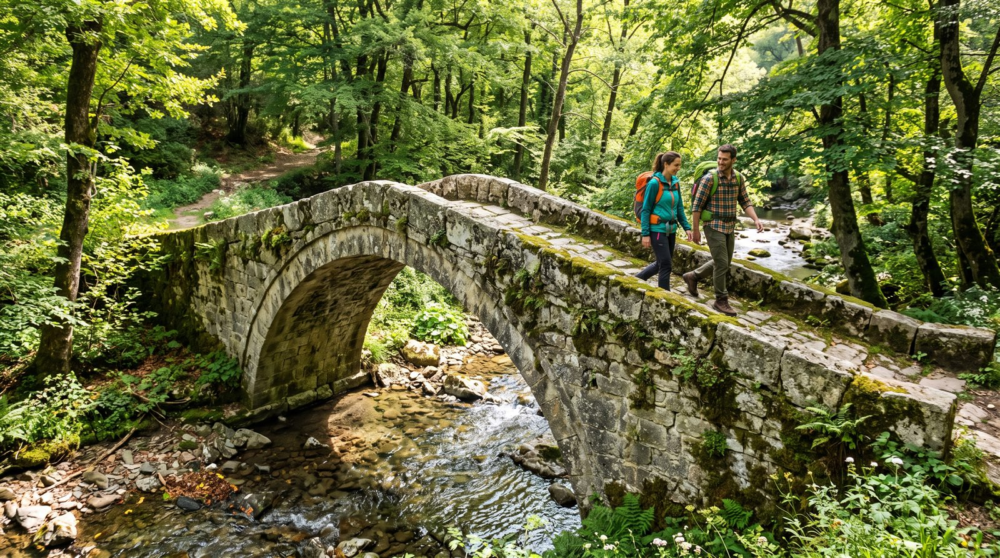
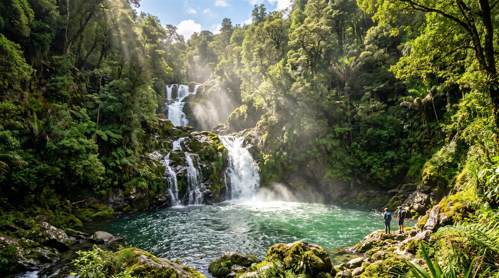

Termal günlerinizin arasına bir doğa molası ekleyin: fenerden şelaleye, taş köprüden saklı göle — hepsi yerleşkeden günübirlik mesafede.
Armutlu Yarımadası'nın şansı, iki dünyanın tam ortasında durması: bir yanda Marmara'nın maviliği, diğer yanda Samanlı Dağları'nın orman denizi. Tor Thermal'den yola çıkan beş rota derledik; kiminde fünikülere biniyorsunuz, kiminde ahşap bir patikada su sesini takip ediyorsunuz. Bir noktaya dokunun, rotaya inin. Yerleşke içindeki günlük etkinlik programı için Aktiviteler sayfasını da inceleyin.
Süreler yaklaşıktır; hava, mevsim ve yol koşullarına göre değişebilir. Rota planlaması için resepsiyondan güncel bilgi alabilirsiniz.
Beş rotanın en yakını, kapınızın hemen önünde başlıyor. Yerleşkenin fünikülerine binin; kabin yamacı tırmanırken Marmara ayaklarınızın altında genişlesin. Yukarıda sizi seyir terası ve yarımadanın ucundaki tarihi Bozburun Feneri karşılıyor — yıllardır gemilere yol gösteren bu yapı, şimdi gün batımlarının en iyi izlendiği noktalardan biri.
 Yerleşke içinde
Araçla ~40 dk
Yerleşke içinde
Araçla ~40 dk
Yalova Termal'in ardındaki kayın ve çınar ormanında, ahşap yürüyüş platformlarıyla döşenmiş bir patika sizi şelaleye taşır. Yol boyunca dere hep yanınızdadır; son virajı döndüğünüzde su, yosunlu kayalardan katman katman dökülür. Serin, gölgeli ve fotoğrafa doymayan bir rota — dönüşte Termal'in tarihi hamam meydanında çay molası klasiktir.
Dere yatağının üzerinde asırlardır duran tek kemerli taş köprü, bölgenin en zarif kültür duraklarından. Kesme taşların arasından sarkan sarmaşıklar, altından akan suyun sesi ve çevresindeki çınar gölgeleri; kısa ama akılda kalan bir mola vaat eder. Kemerin tam ortasında durup dereye bakmak — buranın küçük ritüeli budur.

Araçla ~40 dk
Araçla ~35 dkErikli Yaylası'na tırmanan yol, her virajda Marmara'yı biraz daha aşağıda bırakır. Yaylaya vardığınızda sizi iki ödül bekler: doğal havuzcuklara dökülen serin şelale ve yayla evlerinin bahçesinde kurulan köy kahvaltısı. Sabah erken çıkın; kahvaltıdan önce şelaleye inen patikayı yürüyün, sofraya iştahla oturun.
Bu rotanın fotoğrafını bilerek koymadık. Bazı yerlerin ilk karesi, oraya kendi gözleriyle varanların hakkıdır.
Orman yolunun bittiği yerde, ağaçların araladığı bir perdenin ardında durur Dipsiz Göl. Adını, dibinin bulunamadığını söyleyen eski bir yayla efsanesinden alır. Sabah sisinde yüzeyi ayna gibidir; çevresindeki çayırlar bölgenin en sevilen piknik ve fotoğraf duraklarındandır. Sessizliği bozan tek şey, ara sıra suya değen bir dal ya da uzaktan gelen çan sesidir.
Orman içi yollar mevsime göre değişkenlik gösterebilir; çıkmadan önce resepsiyondan güncel yol durumu alınız.
Rotalar işin yalnızca yarısı. Bahar aylarında yerleşke çevresi, adrenalini doğayla buluşturan aktivitelerle canlanır — sabah termal havuzda başlayan gün, öğleden sonra orman yolunda devam eder.
Aktiviteler mevsim ve hava koşullarına bağlıdır; bir bölümü yerel operatörlerce düzenlenir. Yoğun fiziksel aktiviteler öncesinde sağlık durumunuzun uygunluğu için hekiminize danışınız.
Rotayı seçtiniz; gerisi zarif bir ritim meselesi. Örnek bir gün akışı şöyle görünür — saatler tamamen size kalmış.
Kahvaltının ardından resepsiyondan rota bilgisini ve yol durumunu alın.
Şelale, köprü ya da göl — seçtiğiniz durakta doğanın temposuna geçin.
Yürüyüşün yorgunluğunu yaklaşık 38° termal suda bırakın; kaslarınız teşekkür eder.
Fünikülerle seyir terasına çıkın; günü Bozburun Feneri'nde, ufka karşı kapatın.
Deneyim Günü'nde yerleşkeyi gezin, termal suyu deneyin; çevre rotaları ekibimizle birlikte planlayın. Karar her zaman sizin, her zaman baskısız.